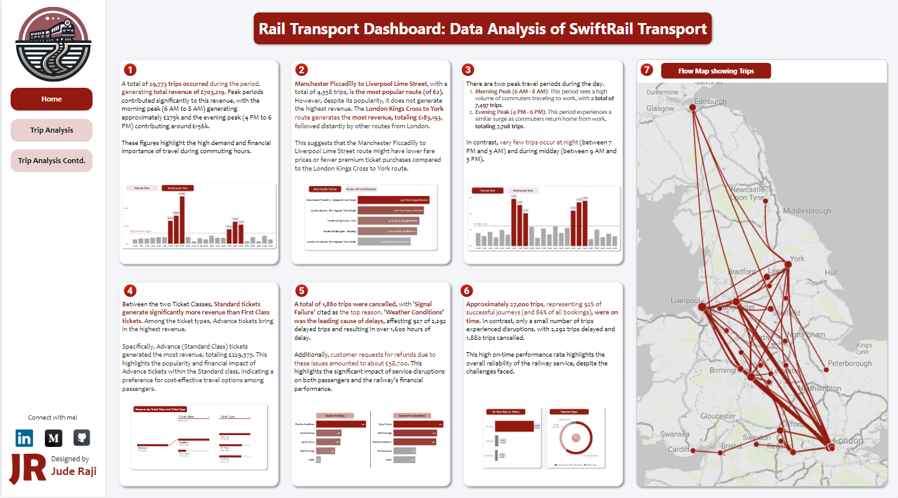

Spotify Wrapped Dashboard
My Submission for Maven Music Challenge (Jan 2025)
Tools Used: Microsoft Excel, Microsoft Power BI, Figma
Hotel Booking Analysis
Understanding Guest Cancellations
Tools Used: Microsoft Excel, Microsoft Power BI, Figma

Exploratory Data Analysis of EA Sports FC 24
A Data-Driven Expose into Football’s Top Players and Leagues.
Tools Used: Microsoft Excel, Microsoft Power BI

Maven Cafe Card Rewards Program Report
This analysis focuses on identifying key customer segments and developing a data-driven strategy for optimizing promotional messaging and targeting for Maven Cafe
Tools Used: Microsoft Excel, Microsoft Power BI

Analyzing a Fitness Company’s Financial Position
I analyzed the financials of a Fitness company focusing on three major products: Sportswear, Sports Equipment and Nutrition & Food Supplements
Tools Used: Microsoft Excel, Microsoft Power BI

Rail Transport Dashboard: Data Analysis of SwiftRail Transport
I analyzed a fictional Rail Transport Company in the UK, uncovering insights into routes, peak times, revenue, and delays, providing recommendations for improved efficiency and satisfaction.
Tools Used: Microsoft Excel, Microsoft Power BI